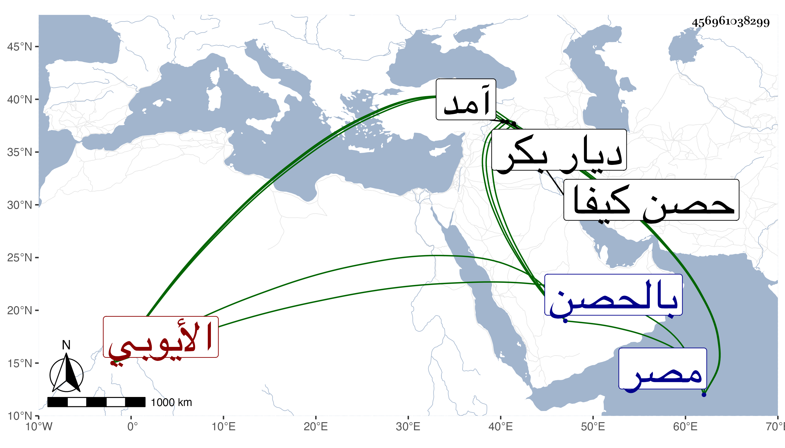

0902Sakhawi.DawLamic.ITO20230111-ara1.EIS1600.456961038299
Biography ID: 456961038299
أحمد بن سليمان بن غازي بن محمد بن أبي بكر بن عبد الله بن تورشاه ابن أيوب بن محمد بن أبي بكر بن أيوب بن شاذي الأشرف أبو المحامد بن العادل ابن المجاهد بن الكامل بن العادل بن الأوحدي المعظم بن الصالح نجم الدين صاحب مصر بن الكامل الأيوبي صاحب حصن كيفا وأعمالها من ديار بكر . وليها بعد أبيه في سنة سبع وعشرين وكان مشكور السيرة محبا لرعيته لوفور عقله وسياسته وديانته مع فضل وميل زائد إلى الأدب ومشاركة في فنون وكرم وشجاعة وظرف . ذكره شيخنا في أنبائه وقال أنه كان خرج في عسكره لملاقاة السلطان على حصار آمد فاتفق أنه نزل لصلاة الصبح فوقع به فريق من التركمان فأوقعوا به على غرة فقتل وذلك في شوال سنة ست وثلاثين ودفن بالحصن وهو في أوائل الكهولة ووصل ولده الصالح خليل مع بقية أصحابه إلى السلطان فقرره في مملكة أبيه ولقب بالكامل قال وكان فاضلا أديبا له شعر حسن وقفت على ديوانه وهو يشتمل على نوائح في أبيه وغزل وزهديات وغير ذلك ، وكان جوادا محبا في العلماء رحمه الله . قلت وممن ذكره المقريزي في عقوده وقال أنه مات عن نحو الستين فالله أعلم وشق قتله على الأشرف كثيرا ، ومن نظمه :
| بدا حبي وقد خضب اليدين | فأتلف مهجتي بالحاجبين |
| وبين النوم والجفن اختلاف | كما بين الذي أهوى وبيني |
| ترفق يا حبيب القلب واعطف | لتنعم بالرضا عيني بعيني |
| إذا رمت سلوا الق قلبي | يجرجره الجمال بقائدين |
| وإن أذنبت ذنبا يا غزالي | أرى لك عند قلبي شافعين |
| يعنفني فؤادي كيف أسلو | مليحا ساكنا في الناظرين |
| يذوب القلب مني حين يضحى | شرودا للغرام محركين |
| فزرني يا حبيبي تلق أجرا | ودس فضلا على رأسي وعيني |
